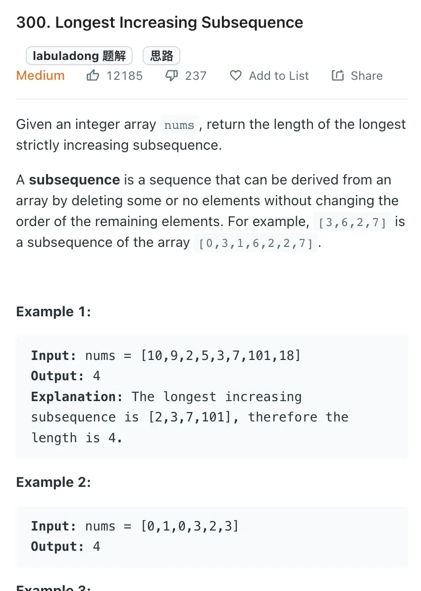
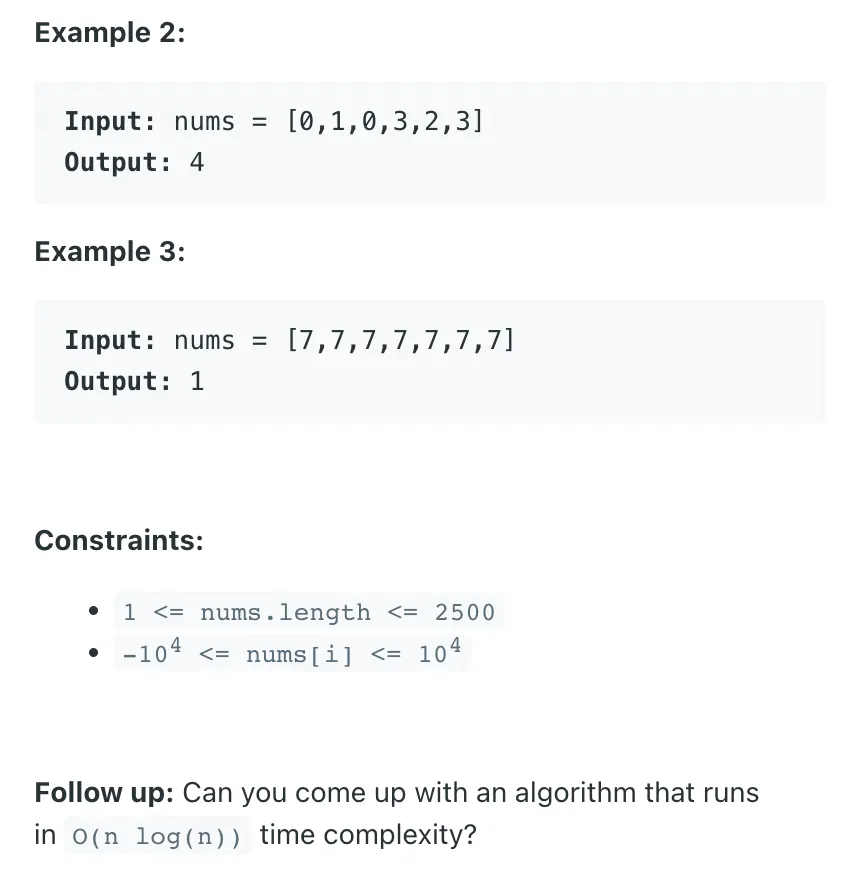

300. Longest Increasing Subsequence
考過的公司：Amazon、Bytedance、Google、tiktok
Question


✍🏽 My Solution
class Solution {
public int lengthOfLIS(int[] nums) {
int n = nums.length;
int[] dp = new int[n];
// 紀錄子序列的最長長度
int max = 1;
// base case：dp 数组全都初始化为 1
dp[0] = 1
for (int i = 0; i < n; i++) {
dp[i] = 1;
for (int j = 0; j < i; j++) {
if (nums[j] < nums[i]) {
dp[i] = Math.max(dp[i], dp[j] + 1);
}
}
max = Math.max(max, dp[i]);
}
return max;
}
}
🧠 Thought Process
- What is the time/space complexity of my solution? How do I know?
- time: O(n)
- space: O(n)
Solution #1 [王爭]
Runtime: 68 ms, faster than 52.51% of Java online submissions for Longest Increasing Subsequence. Memory Usage: 44.8 MB, less than 28.13% of Java online submissions for Longest Increasing Subsequence.
class Solution {
public int lengthOfLIS(int[] nums) {
int n = nums.length;
int[] dp = new int[n];
// 紀錄子序列的最長長度
int max = 1;
// base case：dp 数组全都初始化为 1
Arrays.fill(dp, 1);
for (int i = 0; i < n; i++) {
for (int j = 0; j < i; j++) {
if (nums[i] > nums[j]) {
dp[i] = Math.max(dp[i], dp[j] + 1);
}
}
max = Math.max(max, dp[i]);
}
return max;
}
}
Explanation (in my words)
-
How does their solution work?
- 構建多階段決策模型，每一階段決策一個數字，是否放入地曾子序列中。
- 1) 如果當前數字小於等於已經放入遞增子序列中的最後一個數字，那麼這個數字只能選擇不放入遞增子序列
- 2) 如果當前數字大於已經放入遞增子序列中的最後一個數字，可以選擇將其放入遞增子序列，也可以選擇不放入。
- 所以決策階段都做完之後，就找到了一個遞增子序列，利用回溯算法窮舉所有的遞增子序列，比較出最長的那個。
- 是否能用dp解決呢？紀錄某個階段決策完之後的最大遞增子序列長度？
- dp[i]紀錄nums[i]為結尾的最大遞增子序列長度 那在這樣一個遞增子序列中（以nums[i]結尾） 上一個數字為：nums[i]（0≤j<i && nums[j-1]<nums[i]）中個任意一個，所以：dp[i] = max(dp[j]+1)，其中：0≤j<i && nums[j-1] < nums[i]
-
What is the space/time complexity of their solution?
- time: O(n^2)
- space: O(n)